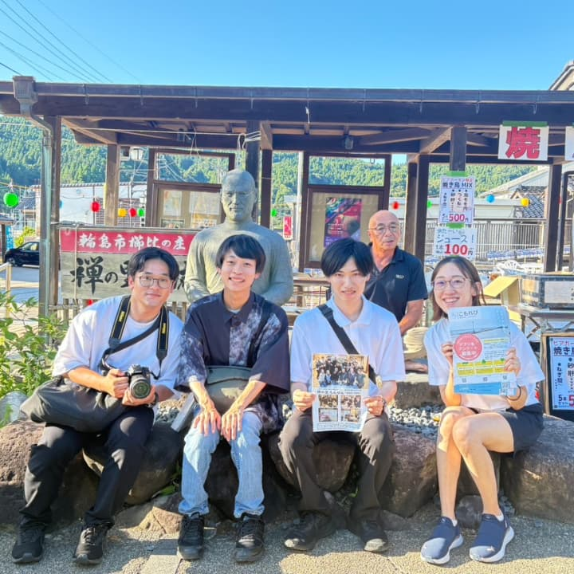

能登半島にてアプリ開発のための現地調査を行いました。
2025年8月7日〜11日に、メンバー全員で、能登半島を訪れました。
アプリ開発のための現地調査を主目的とし、以下の活動を行いました。
- 輪島市内の各種スポットの調査・写真撮影
- 輪島市内の飲食店の掲載許可取得・写真撮影
- 輪島市内でのチラシの配布・設置
- 珠洲市、穴水町、志賀町、能登町の調査
- 重蔵神社での支援物資配布
- 現地ミーティング
輪島市内の各種スポットの調査・写真撮影
アプリに掲載予定のスポットを巡りました。
輪島市東部に位置する白米千枚田。5月に訪れた際は田植え前でしたが、すっかり青田になっていました。空と海の青と相まって美しい景観でした。
国道249号の海上道路を通り、曽々木海岸へ向かいました。先日の大雨の影響で、海は濁っていました。
続いて、輪島市西部の門前町に訪れた際の記念写真です。お互いのチラシを手に持っています。
その翌日は總持寺を訪問しました。總持寺は2007年の能登半島地震でも被害を受けており、2021年、完全復興を遂げ落慶法要が行われました。2024年の地震はまさにその矢先であったそうです。震災の跡も見られましたが、それに負けない重厚な佇まいに力強さを感じました。
輪島市内の飲食店の掲載許可取得・写真撮影
アプリへの掲載許可をもらうため、輪島市内のほぼ全ての飲食店を訪ねました。悪天候や臨時休業により、全てを回り切ることは叶いませんでした。それでも多くのお店に赴くことができました。素敵なお店が沢山あり、次回輪島市に行ったとき、どこで食事をするか迷ってしまうほどです。
輪島市内でのチラシの配布・設置
輪島市の各所でアプリのチラシを配りました。多くの飲食店や空港、道の駅、コンビニ、スーパーなどの各施設で受け取ってもらい、設置・掲示していただいております。全ての訪れた飲食店に配布しました。
珠洲市、穴水町、志賀町、能登町の調査
アプリの初回リリース時は対象範囲が輪島市のみとなっていますが、将来的には能登全域を網羅する予定です。そのため、今回は輪島市外の調査も行いました。
珠洲市ではつばき茶屋で食事をしました。石に書かれたユニークなメニューで注文し、イカ様定食やぶりっ子丼定食をいただきました。品数豊富な美味しい料理で大満足でした。


穴水町で最初に訪れたのは、下唐川にある一人一花さんのガーデン「風と光のふるさと Garden Karaco」です。「一人一花 in 能登半島」プロジェクトでは、地域の方々の手で花を植え、震災で生まれた空き地を彩り豊かな憩いの場へと変えていく取り組みが行われています。綺麗な花壇、メダカが泳ぐ川、手作りのステージやベンチなど、暖かな空間に癒されました。
続いて穴水町のワイナリー、能登ワインの見学に行きました。葡萄畑、醸造設備、熟成部屋や被災時の写真を見せていただきました。最後の試飲タイムでは酒好きメンバー、酒初心者メンバー共にお気に入りの一本を見つけました。


そのほかに、ボラ待ちやぐら、能登長寿大仏が位置する真和園、のと鉄道の穴水駅、来迎寺など、多くのスポットを案内していただきました。
穴水町を後にして、志賀町にある一人一花さんのガーデン、「志賀町草木」と「志賀町富来」も訪問しました。今回の活動では、下唐川と合わせて3箇所のガーデンを巡りました。今後、他のガーデンも訪問したいと考えています。
重蔵神社での支援物資配布
8月9日、重蔵神社での支援物資配布に参加しました。食料品や生活用品の配布に加え、会場ではかき氷の販売が行われていました。5月に訪れた際も参加した配布活動。現在は毎週土曜日に行われていますが、参加者は次第に減少しており、終了時期が近いとのことです。
現地ミーティング
調査中は2チームに分かれて活動することが多くありました。団体メンバー全員で活動内容を把握するため、毎晩ミーティングを実施しました。その日の出来事や感想を当日中に伝えることで、体験を最大限、共有することができたと考えています。